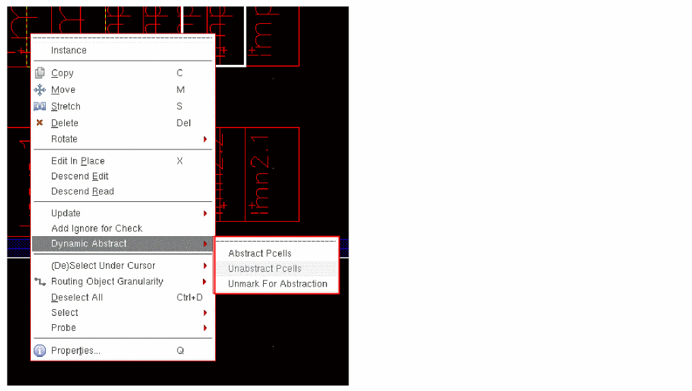

Layout Canvas Using the Context-Sensitive Menu
You need to select a Pcell in the layout canvas to view the context-sensitive menu. The Dynamic Abstract submenu that is available on the context-sensitive menu contains commands that can be used for Dynamic Abstract Generation. Right-click a selected Pcell to view this menu, as shown below.

Selecting the Abstract Pcells command from the context-sensitive menu does not display the Abstract Pcells form. The abstract is created automatically based on the abstraction rules specified in the default options file, namely, .dynamicAbstract.options.
Related Topics
Dynamic Abstract Generator Context-Sensitive Menu
Return to top